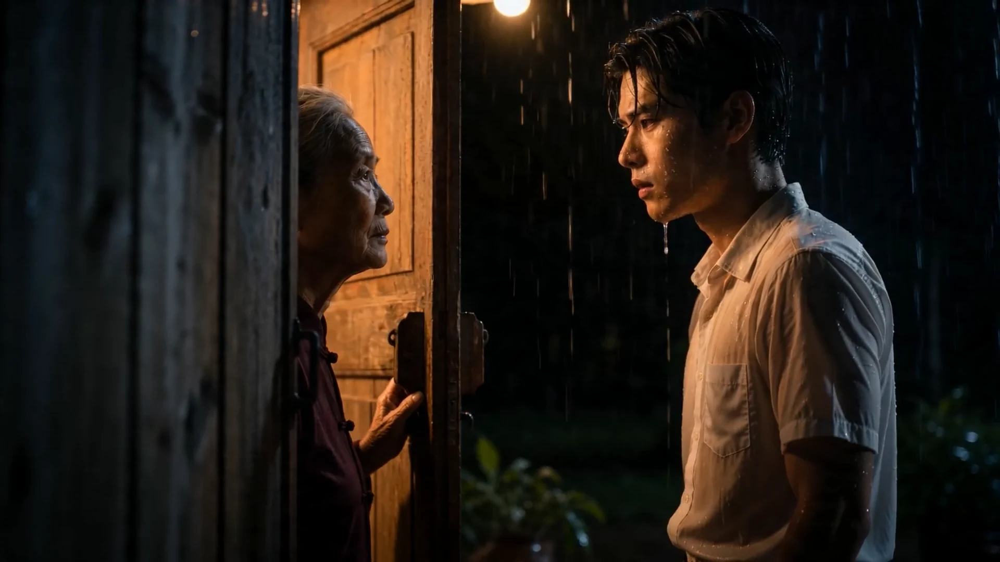

MFA Thesis Project Awards
Hong Kong Baptist University · 香港浸會大學
Empty 虛舟Screenwriter 編劇
Script · Bronze 1
A FRAME FROM THE WAY BACK / 轉來A MULTIDISCIPLINARY PRACTICE （創作）
我是蔡健宇，常駐香港的影像創作者與視覺設計師。
從電影敘事到文化現場，從最初的文字到最後一幀，
以完整的製作視野，尋找故事與人的連結。
A COLLECTION OF PERSPECTIVES
10 PROJECTS / 2022—2026
DIRECTOR. IMAGE MAKER. DESIGNER.
蔡健宇 BASED IN HONG KONG
目前就讀於香港浸會大學電影、電視與數碼媒體藝術碩士（MFA），創作涵蓋影視製作、視覺設計與活動策劃。
具備從前期策劃、攝影、燈光到後期剪輯、調色、網頁及平面設計的全流程製作能力。曾參與香港大學、香港理工大學等多項學術與文化項目的視覺及影像統籌。
ACROSS CULTURE & ACADEMIA
創作路上的回響。
Hong Kong Baptist University · 香港浸會大學
派拉蒙國際電影節
灣區國際AI影展 · BAIAFF-Award